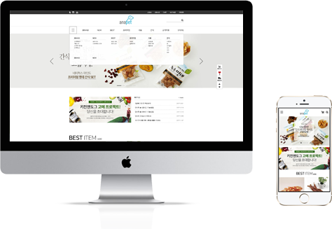
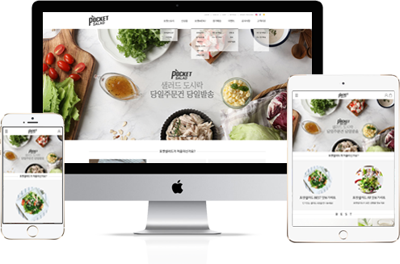
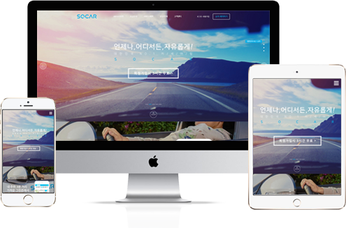
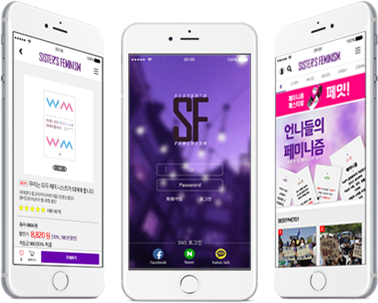

- PERSONAL
- Name 윤수완(尹遂完)
- Birth 1997.08.23
- Mobile 010.4493.8181
- E-mail sy970823@gmail.com
- Address 울산광역시 북구 화봉동
- EDUCATION
- 2013.03 - 2016.02 무룡고등학교 졸업
- 2016.03 - 2017.09 한국관광대학 호텔제과제빵과 입학, 자퇴
- 2017.10 - 2018.04 그린컴퓨터 아카데미
스마트기기UX,UI 디자인 기획 및 설계
- LICENCE
- GTQ 1급
- 운전면허 보통 2종
- 제과 기능사
- SKILL
01
SUPREME
ADAPTIVE WEB
제작기간
1주
CONCEPT
심플함
시그니처컬러
CONCEPT EXPLANTION
- 기존의 슈프림사이트는 컨셉을 알 수 없는
디자인이었고,화이트 백그라운드에 화이트 폰트 컬러를
사용하는 등 사용자의 불편함을 극대화 시키는
사이트로 보였기 때문에 새롭게 디자인을 했습니다.
슈프림의 시그니처 컬러인 RED를 전체적으로 사용하였고,
가독성을 높히기 위해 백그라운트 컬러를 WHITE,
폰트 컬러를 BLACK으로 사용했습니다.
꼭 필요한 내용들만을 사용해 단순하게 레이아웃을
배치시켜 새롭게 리뉴얼해 보았습니다.
02
ANAPET
ADAPTIVE WEB

CONCEPT EXPLANTION
- 기존의 안아펫 사이트는 너무 많은 컬러를
사용하여 난잡해 보였고, 필요 이상의 크기의 배너때문에
메인 페이지에 시선이 잘 가지 않는것을 느껴
단조롭고 심플한 느낌을 주는 디자인을 해보았습니다.
가독성을 높히기 위해 BLACK 컬러로 헤더와 footer
부분을 디자인했으며, 이 사이트에서
중요한 내용을 GRAY계열 밝은 컬러를 주어
사용자의 시선이 더 잘 가게끔 디자인을 했습니다.
배너를 축소시키고 필요없는 내용은 삭제하였으며,
전체적으로 사용자가 찾기 쉽도록 간단하고
심플하게 디자인을 하였습니다.
03
POKET SALAD
RESPONSIVE WEB

CONCEPT EXPLANTION
- 기존의 포켓샐러드 사이트는 내비게이션이
사용자의 가독성을 생각하지 않은 디자인이었고,
너무 많은 내용이 첫 페이지에 있었습니다.
그래서 컨셉을 심플함, 깔끔함으로 정했고,
이미지를 통해 눈에 즐거움을 더해주는 디자인을
해보았습니다. 먼저, 헤더는 가독성을 높히기 위해
내비게이션에 2단 메뉴를 만들어 사용자가 찾기 쉽게 만들었고,
메인은 사용자의 구매 욕구를 높힐 수 있는 이미지를
사용하였습니다. 첫 페이지의 내용이 많으면 지루할 수
있기 때문에 대부분의 내용을 삭제하고
해당 카테고리별로 묶어 정리를 했습니다.
04
PARADISE
ADAPTIVE WEB
CONCEPT EXPLANTION
- 기존의 파라다이스 호텔 사이트는 한 페이지 안에
모든게 들어있어 답답한 느낌을 받았습니다.
슬라이드에는 너무 많은 이미지가 들어있습니다.
제가 생각한 디자인은 내비게이션의 디자인 수준을
높히고 다른 문제점을보완할 수 있는 디자인이며,
그에 맞게 만들어 보았습니다.
따듯한 분위기의 시그니처 컬러를 가장많이 사용했고,
호텔의 야경 이미지들을 사용해 우아함을 더했습니다.
그리고 사용자들이 많이 찾는 세가지 메뉴를 삽입해
사용자가 쉽게 사용할 수 있도록 디자인했습니다.
05
SOCAR
RESPONSIVE WEB

CONCEPT EXPLANTION
- 기존의 쏘카 사이트는 너무 단조롭다는 느낌을 받았습니다.
내용도 몇가지 없어 허전해 보이고, 몇개 없는 레이아웃에
이것저것 삽입해서 어떤 메뉴가 어디있는지 잘
모르겠다는 생각을 했습니다. 카셰어링 사이트인만큼
활동적인 페이지로 디자인을 해보았습니다.
먼저, 쏘카의 시그니처 컬러인 BLUE를 사용해
활동적임을 강조했습니다. 그리고 사용자들이 여행을
떠나고 싶게끔 만들어주는 이미지를 사용했고,
쏘카를 처음 이용하는 사용자에게 이용안내를 쉽게
이해할 수 있는 디자인을 해보았습니다.
06
SISTER’S FEMINISM
UX / UI DESIGN

SITE
SISTER’S FEMINISM
COLOR
CONCEPT EXPLANTION
- 페미니스트 혹은 페미니스트가 되고 싶은 많은
사람들이 모여 소통할 수 있는 어플입니다.
여러 커뮤니티에서 페미니스트들이 모여 이야기하는
것만으로 안티 페미니스트들에게 욕을 먹고 살인 협박까지
받아왔습니다. 때문에 페미니스트들에게는 안전하게 자신의
생각을 말 할 수 있는 공간이 필요하기에
SISTER'S FEMINISM을 제작했습니다.
외부의 따가운 시선으로부터 페미니스트들을 보호하고
그들에게 자유로운 말할 권리를 보장해주는 것이 주된 목적입니다.